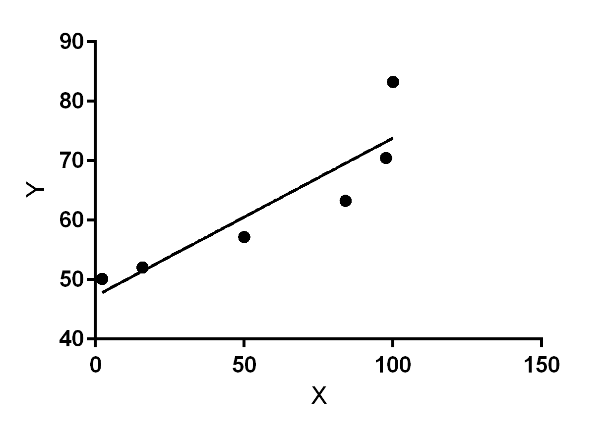

The difference in APM during a match in StarCraft is important to the outcome of the game. Generally, Blizzard's matchmaking algorithm matches players with the same skill levels and theoretically, their APM should be about the same.
However, this is not always the case. We wanted to look at the correlation between the differences in APM during matchmaking and the outcome of the game. We categorized each one to generate a normal distribution curve. In doing so, we can determine what percentage of the population has an APM difference. Overall, we determined that Blizzard's matchmaking system is generally pretty good with an APM difference of 44 in the middle of the graph.
For each category, we counted how many people won over how many total games played. We took the percentage that we will call the Win Ratio to see if it increases with each increasing category.
We plotted the points onto each graph. This goes as follows:
1-3: 50.14%
4-13: 52.07%
14-44: 57.19%
45-107: 63.29%
108-210: 70.49%
211+: 83.29%
We are able to determine that the larger the APM difference is, the higher chance that the player with the higher APM will win.

r = 2380.547 / v((8959.533)(786.079)) = 0.897
Best-fit values
Slope 0.2657 ± 0.06546
Y-intercept 47.25 ± 4.580
X-intercept -177.8
1/Slope 3.764
95% Confidence Intervals
Slope 0.08398 to 0.4474
Y-intercept 34.53 to 59.96
X-intercept -690.9 to -79.75
Goodness of Fit
R square 0.8046
Sy.x 6.196
Is slope significantly non-zero?
F 16.48
DFn,DFd 1,4
P Value 0.0154
Deviation from horizontal? Significant
Data
Number of XY pairs 6
Equation Y = 0.2657*X + 47.25
The X intercept is the APM difference category. The Y intercept is the percentage of win ratios associated with each group. Therefore the line of best fit is y= 0.2657x + 47.25. This correlations means for every percentage increase in the graph, the expected win ratios for the particular player will increase by .2657%. The correlation coefficient is .897. The high correlation between these two factors shows that an increase in APM difference between opponents may result in a higher chance of winning for that said opponent.